基础设施监控-主机使用说明¶
本文档将指导您如何使用基础设施监控查看主机相关信息，包括主机列表、主机详情、主机进程、主机指标、主机进程树、主机CGROUP图表、CPU拓扑图等。
点击左侧导航栏“主机”¶
- 查询主机 搜索范围：可以按条件对主机进行筛选。 值：选择搜索范围对应的具体的查询条件。
- 支持分页显示，每页显示10条记录。
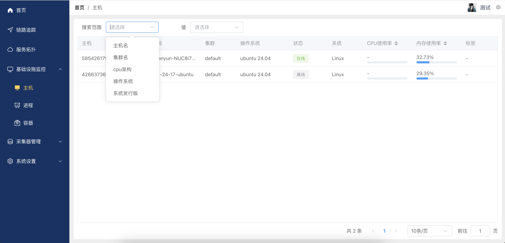
- 主机列表展示信息
- 主机 ID：唯一标识主机的号码。
- 名称：主机名称。
- 集群：主机所属的集群信息。
- 操作系统：主机运行的操作系统版本。
- 状态：主机的在线状态，如“在线”或“离线”。
- 系统：主机架构信息，如“Linux”。
- CPU 使用率：显示主机的 CPU 使用情况。
- 内存使用率：显示主机的当前内存使用情况。
- 标签：对主机添加自定义标签。
- IP地址：主机的 IP 地址。
- IPV6地址：主机的 IPV6 地址。
- 创建时间：主机的创建时间。
- 更新时间：主机的更新时间。
主机详情¶
点击主机列表中的某一项，可以查看主机详情。 可切换选项卡查看不同信息。
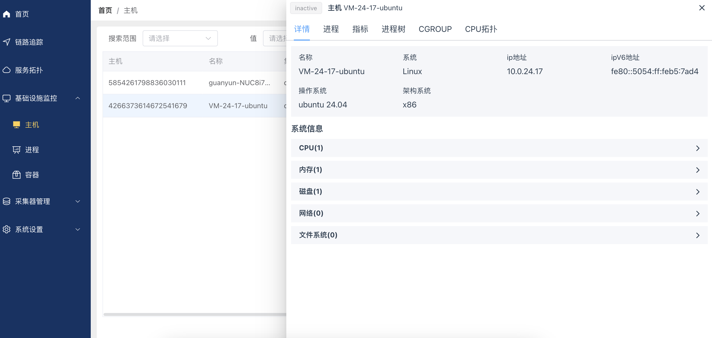
-
主机信息概览 名称：主机名，如 “VM-24-17-ubuntu” 系统：如：Linux 操作系统：如：Ubuntu 24.04 架构系统：如：x86 IP 地址：IPv4 和 IPv6 地址
-
系统信息，可点击右侧箭头展开查看详细信息。
- CPU：查看CPU使用情况。
- 内存：监控内存状态。
- 磁盘：了解磁盘利用率。
- 网络：展示网络连接信息。
-
文件系统：显示文件系统配置。
-
CPU信息
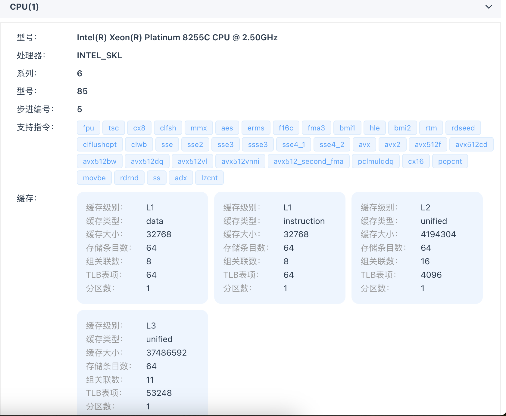
- cpu基本信息 型号：CPU 型号 处理器：CPU处理器类型 系列：CPU 系列 型号：CPU 型号 步进编号：CPU 步进编号
- 支持指令集
CPU支持的指令集如下：
fpu, tsc, cx8, clfsh, mmx, aes, erms, f16c, fma3, bmi1, hle, bmi2, rtm, rdseed clflushopt, clwb, sse, sse2, sse3, ssse3, sse4_1, sse4_2, avx, avx2, avx512f, avx512cd avx512bw, avx512dq, avx512vl, avx512vnni, avx512_second_fma, pclmulqdq, cx16, popcnt movbe, rdrnd, ss, adx, lzcnt
-
缓存信息 缓存级别：CPU缓存级别 缓存类型：CPU缓存类型 缓存大小：CPU缓存大小 缓存个数：CPU缓存个数 缓存等级：CPU缓存等级 缓存共享：CPU缓存是否支持多核共享 分区数量：CPU缓存分区数量
-
内存信息
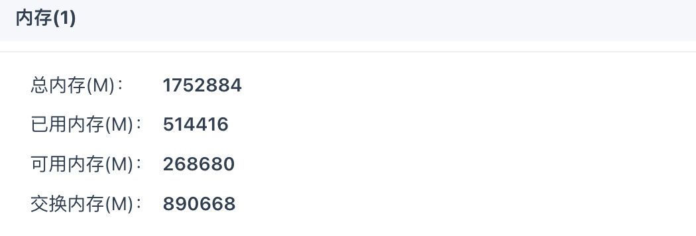
展示内存信息如下： 总内存(M) 已用内存(M) 可用内存(M) 交换内存(M) -
磁盘信息 展示cipit磁盘信息，包括：
- 磁盘名称
- 节点数量
- 已使用容量(G)
主机进程¶
点击主机详情页的“进程”选项卡，可以查看主机进程信息。
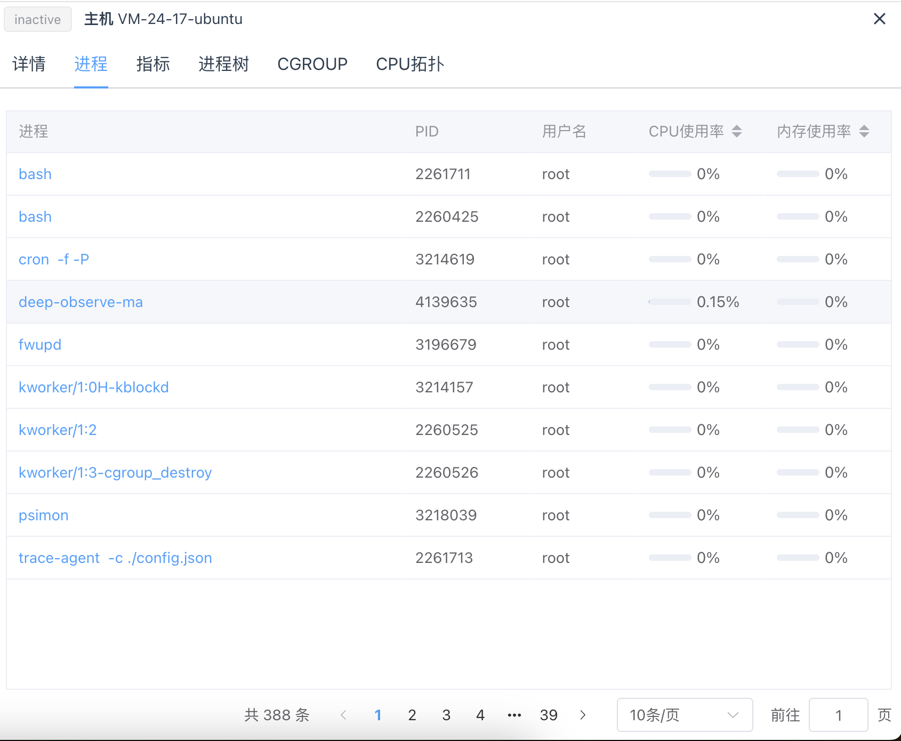
1. 进程列表 展示主机进程列表，包括： - 进程ID - 进程名称 - 进程状态 - 进程CPU使用率 - 进程内存使用率- 支持分页，默认10条记录/页。
- 点击进程名，可以查看进程详情。
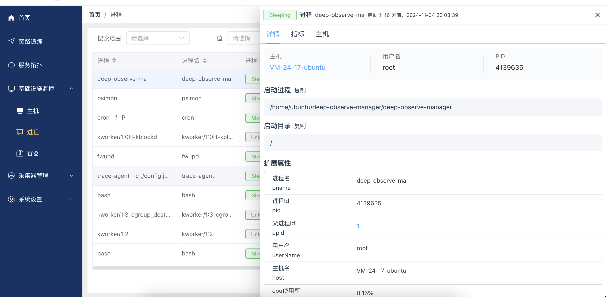
主机指标¶
-
在“指标”选项卡中，用户可以查看以下系统性能指标：
-
CPU 使用率：监控 CPU 在一段时间内的使用率。
- 内存使用率：查看内存的使用情况。
- 内存可使用率：显示可用内存的比例。
- 磁盘使用量：监测磁盘空间的使用。
- 磁盘读取繁忙度：读取操作对磁盘负载的影响。
- 磁盘写入繁忙度：写入操作对磁盘负载的影响。
- 网络流入量：网络数据的接收量。
-
网络流出量：网络数据的发送量。
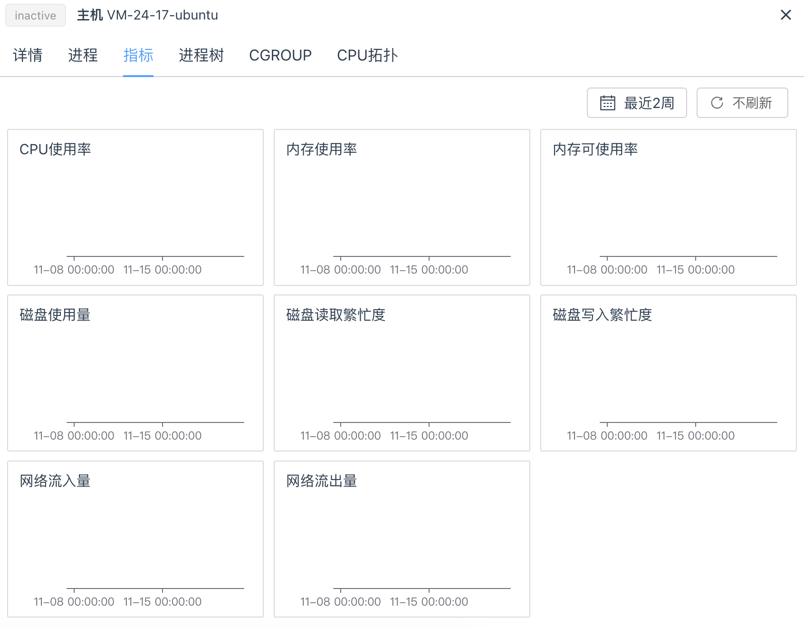
-
选择时间范围 点击右上角的时间选择框，可选取如“最近2周”的数据来查看。 支持选择一段时间范围，如最近一小时、最近一天、最近一周等。
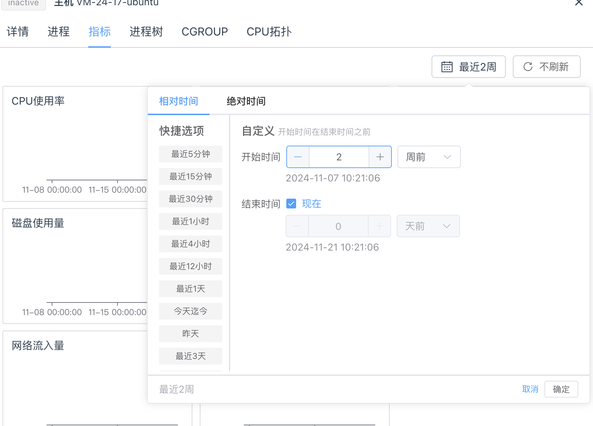
- 实时刷新
可选择实时刷新，实时获取最新数据。
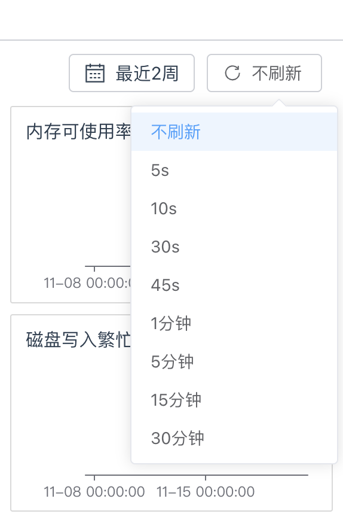
主机进程树¶
- 点击主机详情页的“进程树”选项卡，可以查看主机进程树。
进程树功能通过图形化的层次结构展示主机上所有当前运行的进程。用户可以清晰地了解进程之间的父子关系。
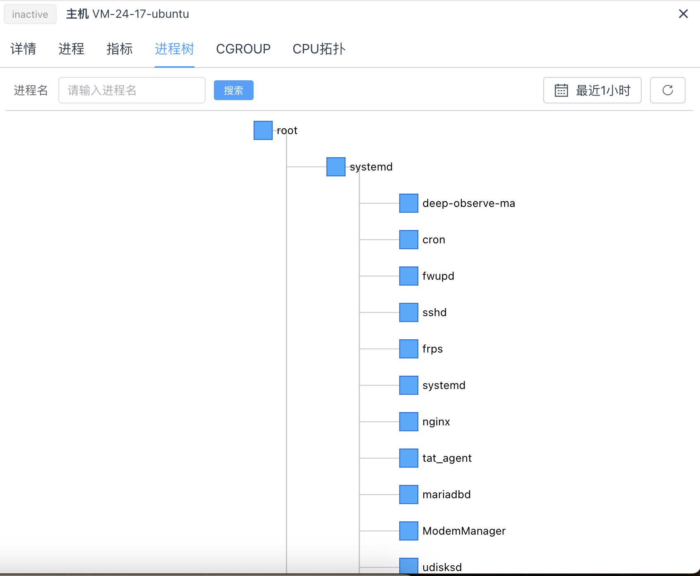
-
查看进程关系 界面上将显示一个树状图，根节点通常是“root”，下一级为系统级进程如“systemd”。 每个矩形块代表一个进程，显示其名称。
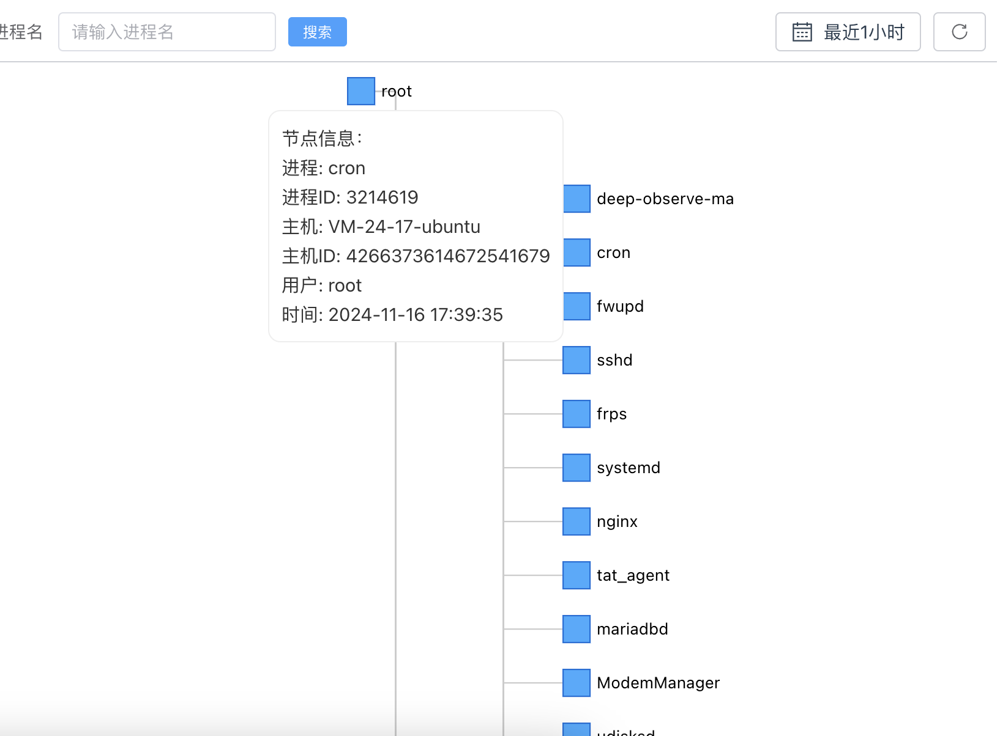
-
搜索进程 在搜索框中输入进程名称，点击“搜索”按钮可快速定位特定进程。
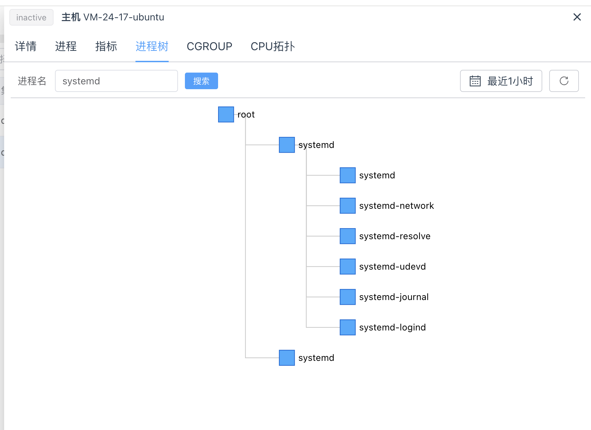
-
调整视图 用户可以通过选择时间范围（如“最近1小时”）来调节显示的进程活动。
-
刷新数据 点击右上角的刷新按钮以更新进程树视图。
-
进程详情 点击进程，可跳转到进程详情。
主机CGROUP图表¶
-
点击主机详情页的“CGROUP”选项卡，可以查看主机CGROUP图表。
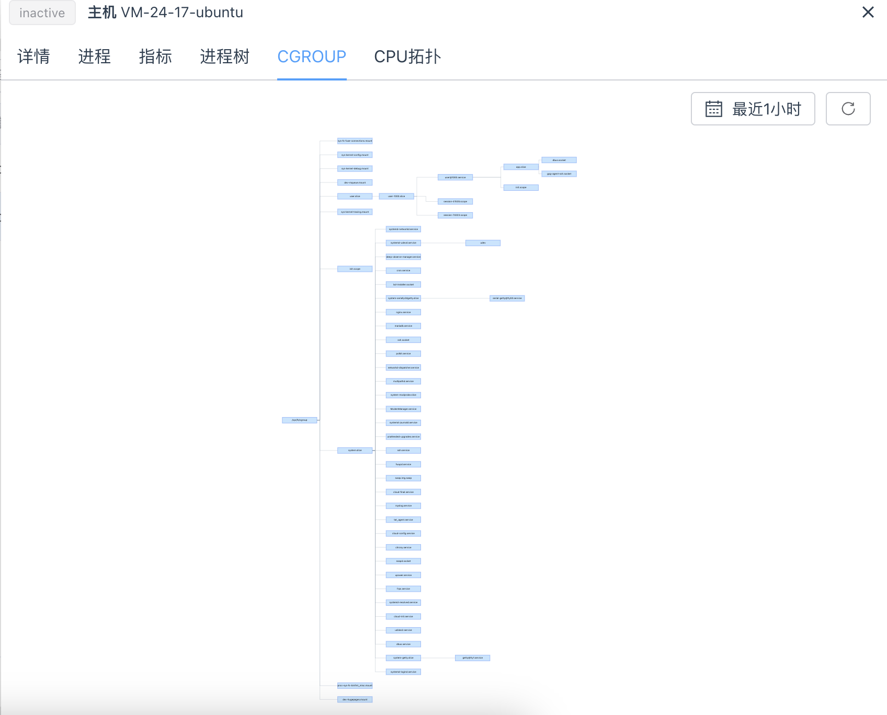
-
查看节点信息（hover查看详细信息）
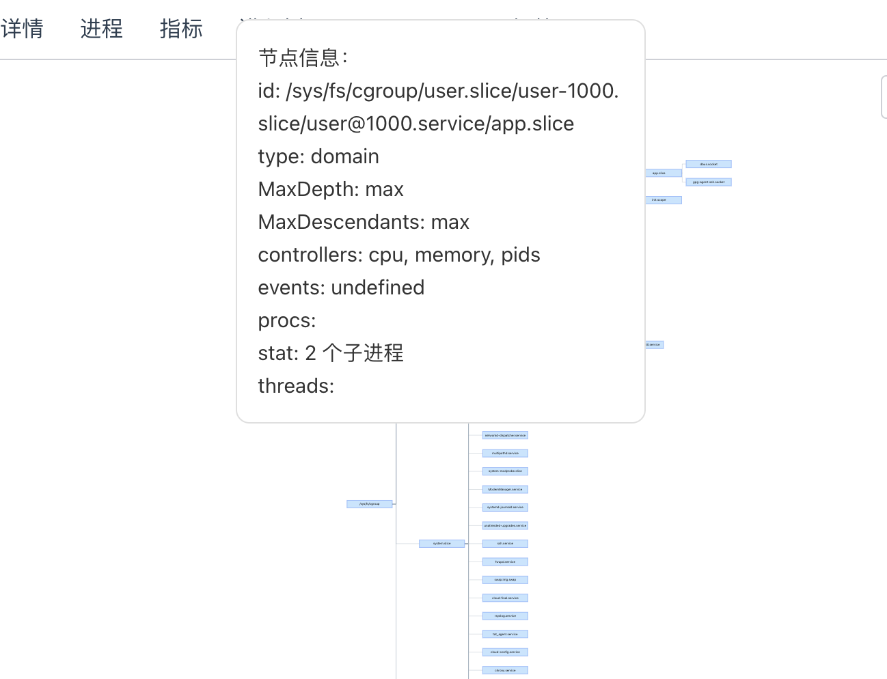
-
调整视图 用户可以通过选择时间范围（如“最近1小时”）来调节显示的CGROUP图表。
-
刷新数据 点击右上角的刷新按钮以更新CGROUP视图。
CPU拓扑图¶
-
点击主机详情页的“CPU拓扑图”选项卡，可以查看CPU拓扑图。
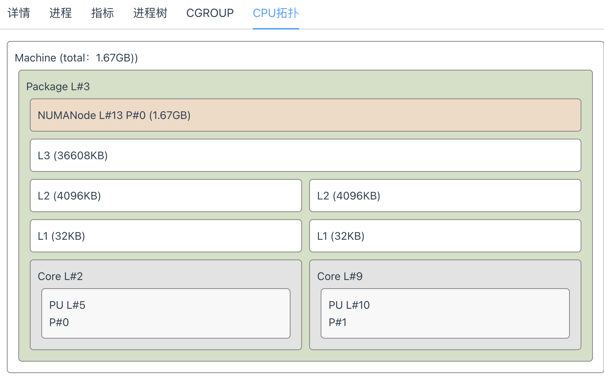
-
拓扑图结构
-
机器总览 Machine (total: 1.67GB)：指示整个机器上的总内存容量。
- 包（Package）信息 Package L#3：表示 CPU 的一个物理包，包括多个核心和缓存。 NUMANode L#13 P#0 (1.67GB)：表示该包包含一个 NUMA 节点，拥有 1.67GB 的内存。
- 缓存层级 L3 缓存 (36608KB)：三级缓存，通常用于多个核心共享的大容量缓存。 L2 缓存 (4096KB)：二级缓存，核心之间共享或独立存在，较高速的缓存。 L1 缓存 (32KB)：一级缓存，速度最快，位于每个核心内部。
- 核心（Core）信息 Core L#2（核心 2）： PU L#5：表示物理处理器单元（Processing Unit）。 P#0：处理器编号。 Core L#9（核心 9）： PU L#10：表示物理处理器单元（Processing Unit）。 P#1：处理器编号。